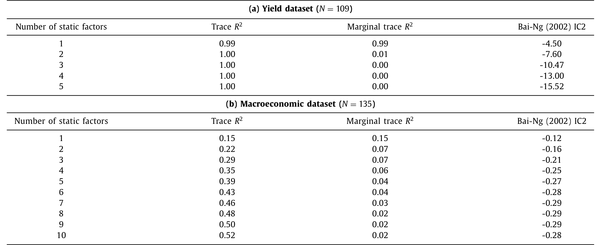
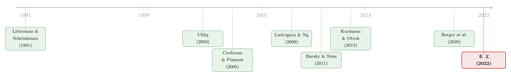

什么在推动国债收益率？——一个「当下按兵不动、三年后才发作」的冲击
本文读的是 Moench & Soofi-Siavash (2022, Journal of Financial Economics)：作者用一个结构动态因子模型，识别出一个「收益率新闻冲击 (yield news shock)」——它在当期【完全不动】国债收益率，却能解释收益率未来变化的最大份额。这个冲击当天不动收益率，是因为期限溢价和预期短端利率的反应恰好相互抵消；可几年之后，它却能解释高达 50% 的国债收益率方差。它的另一面，是一次股债波动率的骤升、实体经济的持续走弱，以及美联储的随后宽松。
1 一个被问烂、却没答清的问题
国债收益率为什么会动？
这个问题听上去近乎幼稚——任何一本固定收益教材都会告诉你，收益率曲线的横截面可以被几个因子概括：第一主成分是 水平因子 (level)，决定曲线整体的平移；第二主成分是 斜率因子 (slope)，决定曲线变陡还是变平。Litterman & Scheinkman (1991) 早就把这件事讲清楚了。于是顺理成章地，「什么在推动收益率」似乎就等于「什么在推动 level 和 slope 的当期创新 (innovation)」。
但作者一上来就给这个看似闭合的答案凿开了一道缝。他们指出：level 和 slope 的【当期】冲击，确实几乎解释了收益率的【短期】波动——可一旦把视野拉长到几年之后，这两个冲击合起来，最多只能解释一半的收益率方差。
换句话说，把收益率曲线在某一时点拍成一张照片，你看到的全部信息（level + slope），对「三年后收益率会去哪里」只说了一半的故事。另一半，藏在今天的收益率横截面【看不见】的地方。
这就是全篇的张力所在：剩下那一半，是什么在推动？
2 「藏起来」的因子，与一个大胆的转译
接着，一个自然的问题是：这「另一半」是不是早有人察觉？
是的。过去二十年，期限结构文献里一直有一条暗线，反复指向同一个直觉——存在某些因子，它们对未来收益率有强预测力，却【几乎不】与当期收益率相关：
- Cochrane & Piazzesi (2005) 发现远期利率的一个线性组合对债券超额收益有强预测力，但与当期收益率只有弱相关；
- Ludvigson & Ng (2009) 从一大堆宏观与金融序列里抽取因子，同样能很好地预测债券收益；
- Duffee (2011) 用卡尔曼滤波找出一个收益率的线性组合，它对收益率几乎【没有即时】影响，却有很强的【滞后】影响；
- Joslin, Priebsch & Singleton (2014) 则证明，真实经济增长和通胀含有超出前三个主成分之外的、对未来收益率的预测信息。
这些证据像是从不同方向射向同一个靶心：存在一类冲击，它在当期【正交于】收益率曲线，却会带着时滞推动收益率。
然后，真正关键的一步出现了。作者说：这种东西，概念上不正是宏观文献里的 新闻冲击 (news shock) 吗？Barsky & Sims (2011) 当年识别「全要素生产率新闻冲击」的办法，就是去找一个【正交于当期 TFP】、却最能解释【未来 TFP】方差的创新。把「TFP」换成「收益率」，把「正交于当期 TFP」换成「不动当期收益率」——同一套逻辑，就能拿来识别一个收益率上的新闻冲击。
这里有一个漂亮的「转译」：以往文献把这类东西当作一个隐藏的【因子 (hidden / unspanned factor)】来找；本文则把它当作一个【冲击 (shock)】来识别。从因子到冲击，看似只是措辞之差，却让我们可以追踪它在一大批宏观与金融变量上的脉冲响应，从而给它一个经济学解释。
3 识别策略：怎样「框住」一个当下不动的冲击
要把上面的直觉做成计量，作者搭了一个 结构动态因子模型 (structural dynamic factor model, DFM)。我们一步步看。
设 \(X_t\) 是 \(N\times 1\) 的观测变量向量（收益率 + 宏观），由少数几个共同因子驱动：
$$X_t = \Lambda F_t + e_t$$
其中 \(F_t\) 是 \(r\times 1\) 的因子向量，\(\Lambda\) 是载荷矩阵，\(e_t\) 是特异成分。因子自身服从一个向量自回归 (VAR)：
$$\Phi(L)F_t = \eta_t,\qquad \Phi(L)=I-\Phi_1 L-\cdots-\Phi_p L^p$$
把两式合并，就得到约化型的移动平均表示 \(X_t=\Lambda\,\Phi(L)^{-1}\eta_t + e_t\)。这里 \(\eta_t\) 是因子 VAR 的【约化型】创新，彼此相关；我们真正想要的是背后那批互相正交的 结构冲击 (structural shocks) \(\nu_t\)。两者之间隔着一个映射
$$\eta_t = H\nu_t$$
只要给 \(H\) 施加恰当的限制，就能把结构冲击「解」出来。
第一步：把 level 和 slope 钉死。 作者把因子排序，让前两个因子正好是 level 和 slope。然后对 \(H\) 施加一组 短期时序限制 (short-run timing restrictions)：
$$ \begin{pmatrix}\eta_t^{Level}\\[2pt]\eta_t^{Slope}\\[2pt]\eta_t^{3:r}\end{pmatrix} = \begin{pmatrix}H_{11}&0&0\\[2pt]H_{21}&H_{22}&0\\[2pt]H_{\cdot 1}&H_{\cdot 2}&H_{\cdot\cdot}\end{pmatrix} \begin{pmatrix}\nu_t^{Level}\\[2pt]\nu_t^{Slope}\\[2pt]\nu_t^{3:r}\end{pmatrix} $$
注意右上角那两个 \(0\)：它们意味着第三个（及更高阶的）结构冲击，【在当期】对 level 和 slope 没有任何影响。这正是「新闻冲击当天不动收益率」这句话的数学化身。这种递归识别并不新鲜——Diebold, Rudebusch & Aruoba (2006)、Bianchi, Mumtaz & Surico (2009) 等都用过类似的下三角结构来识别收益率因子的冲击。
第二步：让它最大化未来方差。 光是「当下不动」还不够——满足这个条件的冲击有无穷多个。作者要的是其中那个【最能解释未来收益率波动】的。于是把第三个冲击 \(\nu_3\) 指定为如下优化问题的解：
这个目标函数有一个干净的闭式解：\(Q_3\) 就是矩阵 \(\sum_{k=1}^{h} D_{k,1:2}'\,D_{k,1:2}\) 中、对应【最大特征值的特征向量】（在被时序限制约束住的子空间内）。直觉上，它在「当下不动收益率」这条窄路上，挑出了让未来一年 level 与 slope 预测误差方差被解释得最多的那个方向。
这套 最大化预测误差方差 (forecast error variance, FEV) 的识别思路，源自 Uhlig (2003)（论文标题 What moves real GNP?——本文标题显然是在向它致敬），后来被 Barsky & Sims (2011) 用于 TFP 新闻、被 Kurmann & Otrok (2013) 用于收益率斜率新闻。
于是收益率的全部波动被拆成了三块：level 当期冲击、slope 当期冲击，以及这个收益率新闻冲击。三者合起来，几乎解释了收益率的【全部】方差。前两者管短期，新闻冲击管长期。
4 数据
- 频率与样本： 月度，1962 年 7 月至 2019 年 6 月。
- 收益率： 109 个零息国债收益率，期限从 12 个月到 120 个月，取自 Gurkaynak, Sack & Wright (2007) 的月末数据；并按 Adrian, Crump & Moench (2013, ACM) 的模型，加入 24、60、120 个月期限的【预期平均未来短端利率】与【期限溢价】两个分解成分。
- 宏观： 基准设定里再叠加一大批宏观与金融序列，主要来自 FRED-MD 数据库（McCracken & Ng, 2016）；另加入周均工时、费城联储领先指标、衡量 S&P100 期权隐含波动率的 VXO、来自 Berger et al. (2020) 的【已实现】股市波动率 (RVol)、美银美林 MOVE 国债波动率指数、Ludvigson, Ma & Ng (2021, LMN) 的金融不确定性、Gilchrist & Zakrajšek (2012, GZ) 的超额债券溢价，以及来自 Consensus Economics 的三个月期国库券预测。
- 规模： 收益率 \(N=109\)；宏观共 \(135\) 个序列，其中 \(125\) 个覆盖整段样本。
- 估计细节： 因子用主成分法估计，因子 VAR 的滞后阶由 BIC 在 \(1\le p\le 12\) 中选出；脉冲响应与方差分解的标准误用 Stock & Watson (2016) 式的参数自助法，重复 500 次。
因子个数怎么定？作者用 Bai-Ng (2002) 的 IC2 准则，并辅以「对未来收益率的预测能力」作为补充判据（这一点呼应了 Crump & Gospodinov 关于收益率因子个数易被高估或低估的提醒）。一个值得玩味的对比是：在宏观数据集里，第一个因子的 trace \(R^2\) 只有约 0.15，且高阶因子的贡献衰减很慢；而在收益率数据集里，头一两个因子就吃掉了绝大部分方差——这正是 level/slope 主导收益率横截面的数字注脚。

Table 1: provides the Bai-Ng (2002) IC2 criterion for
5 主要结果：当下抵消，未来发作
第一个、也是最核心的发现：这个新闻冲击在当期对收益率的净影响为零，不是因为它没作用，而是因为两股力量恰好抵消。
一个正的收益率新闻冲击，会让收益率的两个成分——【预期未来短端利率】与【期限溢价】——朝相反方向运动。在冲击当天，二者大小相当、符号相反，于是收益率纹丝不动。这与「期限结构里存在隐藏因子」的既有文献完全一致：它藏的方式，恰恰是让两个分量在当期对冲掉。
但接下来，两条腿走出了完全不同的步伐：
- 期限溢价的反应【很快消退】；
- 预期未来短端利率却在随后的几年里【持续下行】，并把收益率一路拖低。
正因为这种「快消退 vs. 慢发作」的不对称，新闻冲击的解释力随着预测期限的拉长而【越来越大】：在长达三年的预测期上，它解释了高达 50% 的国债收益率方差。一个当天「看不见」的冲击，几年后成了收益率的头号推手。
第二个发现，是给这个抽象冲击赋予了血肉。一个正的收益率新闻冲击，同时伴随着：股票与债券市场【隐含波动率的骤升】、股价下跌、领先经济指标的大幅当期反应，随后是实体经济活动与通胀的【持续走弱】；而美联储则以【持续下调政策利率】来回应——这又反过来压低了预期未来短端利率和收益率，形成闭环。
6 反转：这个「新闻」，到底是谁的新闻？
到这里，故事其实可以收尾了。但作者没有停手，他们追问：既然收益率新闻冲击当天就伴随波动率飙升，那会不会，广义的金融市场波动率，才是推动收益率长期变化的那只手？
为验证这个猜想，他们如法炮制：再识别两个冲击。
其一，是对股市【隐含与已实现波动率】近期方差贡献最大的冲击。结果令人吃惊——这个波动率冲击的脉冲响应，与收益率新闻冲击【高度相似】，且二者高度相关。更精细的一点呼应了 Berger et al. (2020)：是【已实现】波动率的冲击、而非对未来波动率的【前瞻性不确定性】冲击，在驱动收益率的持续变化。
其二，是对领先指标未来一年预测误差方差贡献最大的 商业周期新闻冲击 (business cycle news shock)。它同样给出与收益率新闻冲击相似的脉冲响应，对预期短端利率和收益率有持续影响，却只对通胀有温和影响。作者指出，这最接近 Angeletos, Collard & Dellas (2018, 2020) 所说的「信心冲击 (confidence shock)」——关于近期经济前景的消息，几乎不影响长期产出和通胀，却是商业周期的关键驱动。
那么这两个「实在」的冲击，是否就把收益率新闻冲击【完全解释】了？没有。已实现波动率冲击与商业周期新闻冲击虽两两正相关、也都与收益率新闻冲击正相关，但合起来只能解释后者约 四分之三的方差。
剩下那四分之一呢？作者再识别出一个【残差】收益率新闻冲击——正交于 level、slope、已实现波动率和商业周期新闻。这个残差冲击对波动率和实体活动几乎不含信息，却仍能解释经济与统计上都显著的收益率方差份额，而且它与【国际主权债市场】的变动相关。换句话说，全球债券收益率的联动，也在为美国国债收益率的长期变化添柴。（关于国际国债之间「一起涨跌、却未必一起被定价」的暗线，可参见《一起涨跌，不等于一起被定价：国际国债里那条「被付了钱」的暗线》。）
7 文献脉络
把这条线索捋一遍，本文坐落的位置就清楚了。
【源头】是期限结构的因子表示：Litterman & Scheinkman (1991) 的 level / slope / curvature，奠定了「几个因子概括整条曲线」的范式。
【方法的另一支】来自宏观计量：Sargent & Sims (1977) 与 Stock & Watson (2002) 把动态因子模型变成处理大规模宏观数据的主力工具；Uhlig (2003) 提出用最大化预测误差方差来识别结构冲击；Barsky & Sims (2011) 把它发扬为识别「新闻冲击」的标准做法。
【两支汇流之前】，期限结构文献已经反复撞见「藏起来的预测力」：Cochrane & Piazzesi (2005)、Ludvigson & Ng (2009)、Duffee (2011)、Joslin, Priebsch & Singleton (2014) 各自从不同角度证明，未来收益率的信息并不完全写在当期收益率横截面里。
【最近的邻居】是 Kurmann & Otrok (2013)：他们识别了收益率【斜率】上的新闻冲击，并发现它与未来 TFP 正相关。本文与之最像，差异也最关键——本文最大化的是 level 和 slope【合起来】的预测误差方差，而 level 才是收益率联动里最重要的维度，因此本文的新闻冲击解释的收益率方差，远大于只盯斜率的版本；此外，DFM 框架让作者能追踪一大批宏观金融变量的脉冲响应，从而把这个冲击解读为「波动率 + 商业周期新闻」，而非「未来生产率新闻」。

8 评论与延伸（Q&A + 研究方向）
(a) 几个可能的疑问
Q：这个「新闻冲击」和 Kurmann & Otrok (2013) 的斜率新闻冲击到底差在哪？
差在「盯住谁」。Kurmann-Otrok 只最大化斜率因子的未来方差，本文则同时最大化 level 与 slope。由于 level 是收益率联动里份量最重的维度，纳入它之后，新闻冲击能解释的收益率方差大得多（长期约 50%）。本文在稳健性里也复现了一个 à la Kurmann-Otrok 的斜率新闻冲击，并显示它的性质更接近本文「正交掉」的那个 slope 当期冲击。
Q：「当期不动收益率」是靠假设强加的，会不会只是把答案写进了识别？
「当期零影响」确实是施加的时序限制（矩阵 H 右上角的零）。但这并非全部——满足该约束的冲击仍有无穷多，真正的识别力来自「最大化未来一年 FEV」这个目标。所以结论里「未来解释 50%」不是假设的产物，而是数据挑出来的方向。当然，零影响这一恒等式式的约束是否站得住，取决于你是否相信 level/slope 之外的冲击当月真的不动收益率。
Q：50% 这个数字，是不是被收益率的高持续性「虚高」了？
这是合理的担忧。Crump & Gospodinov 就指出，收益率高度持续，会让因子个数被高估；而收益率是远期利率的横截面平均，又可能让因子数被低估。作者的回应是：因子个数用 Bai-Ng IC2 选，并额外用「对未来收益率的预测力」交叉验证。但持续性对长期方差分解的影响，仍是这类研究绕不开的脆弱点。
Q：把期限溢价和预期短端利率拆开，靠的是 ACM 模型——这层「模型依赖」有多重？
不轻。「当期净影响为零 = 期限溢价与预期短端利率反向抵消」这个核心叙事，依赖于 Adrian, Crump & Moench (2013) 的分解。换一个期限结构模型（例如 KW、GSW 的拟合方式），抵消的精确程度和两条腿的相对快慢可能改变。好在「收益率长期被预期短端利率拖低、被美联储宽松确认」这条主线，与无模型的脉冲响应是一致的。
Q：既然波动率冲击和商业周期新闻冲击的脉冲响应几乎一样，它们是不是同一个东西？
高度相关，但不是同一个。二者两两正相关，合起来也只解释收益率新闻冲击约四分之三的方差。剩下那约四分之一来自国际主权债联动等其他来源。作者特意把「已实现波动率」与「前瞻性不确定性」分开，发现是前者在驱动收益率的持续变化——这点呼应 Berger et al. (2020)。
Q：这对「靠收益率曲线预测衰退」的老经验有什么含义？
它给那条经验补了一个机制。曲线之所以能预报衰退，未必只是「市场预期降息」，更可能是：一个伴随波动率骤升、实体走弱的新闻冲击，先压低了预期短端利率，再由美联储的宽松确认。预测力的源头，部分是金融市场波动率和近期商业周期前景，而非未来生产率。
(b) 几个可能的研究问题与提案
1. 把同一套识别搬到公司债与信用利差上。
【经济故事】既然收益率新闻冲击伴随波动率骤升和实体走弱，它对【信用利差】的冲击应当更猛烈（违约与流动性双重承压）。可以问：是否存在一个「信用利差新闻冲击」，当期不动利差、却解释其长期方差的大头？ 【可行性】中。数据现成（TRACE、ICE/BAML 利差指数、GZ 超额债券溢价已在本文数据集里），把 DFM 的目标因子从 level/slope 换成信用利差因子即可。识别上沿用 Uhlig (2003) / 本文的 FEV 最大化，难点在因子个数与利差的高持续性。
2. 外资持有人是不是那「残差四分之一」的一部分？
【经济故事】本文把无法被波动率/商业周期解释的残差，归到国际主权债联动上。一个自然的延伸：用外国官方与私人投资者对美债的持有/流动数据（TIC、官方储备），检验残差收益率新闻冲击是否与外资需求的结构性变动同步。 【可行性】中偏低。TIC 月度数据可得，但口径粗、噪声大，且与「冲击」的因果方向难定。或可借高频事件（如大型储备再配置、汇率干预）做辅助识别。
3. 把波动率冲击的「腿」拆给做市商资本约束。
【经济故事】已实现波动率冲击推动收益率长期变化，但波动率本身可能是中介资本受约束的【果】。能否进一步识别一个「中介约束冲击」，看它是否跑在波动率冲击之前？ 【可行性】中。需要交易商资产负债表/杠杆代理变量（如一级交易商持仓、回购利差），识别上可借 local projection。与本文的 DFM 框架兼容性好。
4. 同一识别在零利率下限期间还成立吗？
【经济故事】本文样本止于 2019 年 6 月，主体仍是常规货币政策期。在 2009–2015、2020–2021 的零下限期，「美联储下调政策利率确认收益率下行」这条腿被截断，新闻冲击的传导机制可能改变。 【可行性】高。延长样本、引入影子利率 (shadow rate) 或加入 QE 代理变量重估即可，数据与方法都现成。
5. 把波动率「充耳不闻」的问题接到期限结构模型上。
【经济故事】本文显示波动率冲击是收益率长期变化的主力，但很多无套利期限结构模型对波动率的拟合并不好。可以检验：在能解释收益率的模型里，加入对波动率的拟合，会不会反而损害收益率的拟合？ 【可行性】高。这正与《收益率拟合得再好，也可能对波动率「充耳不闻」》的关切相通，文献和数据都成熟。
9 我的判断
本文最漂亮的地方，是一次概念上的「转译」：把期限结构里那个二十年来被反复目击、却始终面目模糊的「隐藏 / 未跨期 (hidden / unspanned)」因子，从一个【因子】重新表述成一个【冲击】，再借宏观新闻冲击的成熟工具箱给它做了一次「全身扫描」。结论既统一又有力——三个冲击解释收益率几乎全部方差，其中一个当下隐形的新闻冲击独占长期解释力的半壁江山，且它的经济内核是金融波动率与近期商业周期前景，而非未来生产率。这把 Cochrane-Piazzesi、Duffee、Joslin et al. 的零散线索，收束进了一个可解释的框架里。
对识别，我有两点保留。其一是「当期零影响」的时序限制：它把「新闻冲击当天不动收益率」从一个【可检验的实证发现】降格为一个【恒等式约束】，读者只能选择信或不信，而无法从数据里验证。其二是期限溢价/预期短端利率的拆分对 ACM 模型的依赖——而「当期抵消」这个全篇最优雅的叙事，恰恰建立在这个拆分之上；换一个期限结构模型，抵消的精确程度未必还那么干净。
后续我最想看到的，是把这套识别延伸到信用市场和零利率下限期：前者能检验「收益率新闻冲击」是否在更承压的资产上放大，后者能告诉我们，当美联储那条「确认收益率下行」的腿被截断时，这个冲击还剩多少传导力。
参考文献
- Adrian, T., Crump, R.K., Moench, E. (2013). Pricing the term structure with linear regressions. Journal of Financial Economics 110(1), 110–138.
- Angeletos, G.-M., Collard, F., Dellas, H. (2018). Quantifying confidence. Econometrica 86(5), 1689–1726.
- Angeletos, G.-M., Collard, F., Dellas, H. (2020). Business-cycle anatomy. American Economic Review 110(10), 3030–3070.
- Barsky, R.B., Sims, E.R. (2011). News shocks and business cycles. (productivity news shock identification.)
- Gilchrist, S., Zakrajšek, E. (2012). Credit spreads and business cycle fluctuations. American Economic Review 102(4), 1692–1720.
- Gurkaynak, R.S., Sack, B., Wright, J.H. (2007). The U.S. Treasury yield curve: 1961 to the present. Journal of Monetary Economics 54(8), 2291–2304.
- Joslin, S., Priebsch, M., Singleton, K.J. (2014). Risk premiums in dynamic term structure models with unspanned macro risks. Journal of Finance 69(3), 1197–1233.
- Kurmann, A., Otrok, C. (2013). News shocks and the slope of the term structure of interest rates. American Economic Review 103(6), 2612–2632.
- Litterman, R., Scheinkman, J. (1991). Common factors affecting bond returns. Journal of Fixed Income 1(1), 54–61.
- Ludvigson, S.C., Ng, S. (2009). Macro factors in bond risk premia. Review of Financial Studies 22(12), 5027–5067.
- Ludvigson, S.C., Ma, S., Ng, S. (2021). Uncertainty and business cycles: exogenous impulse or endogenous response? American Economic Journal: Macroeconomics 13(4), 369–410.
- McCracken, M.W., Ng, S. (2016). FRED-MD: a monthly database for macroeconomic research. Journal of Business & Economic Statistics 34(4), 574–589.
- Moench, E., Soofi-Siavash, S. (2022). What moves Treasury yields? Journal of Financial Economics 146(3), 1016–1043.
- Sargent, T.J., Sims, C.A. (1977). Business cycle modeling without pretending to have too much a priori economic theory. New Methods in Business Cycle Research 1, 145–168.
- Stock, J.H., Watson, M.W. (2002). Forecasting using principal components from a large number of predictors. Journal of the American Statistical Association 97(460), 1167–1179.
- Stock, J.H., Watson, M.W. (2016). Dynamic factor models, factor-augmented vector autoregressions, and structural vector autoregressions in macroeconomics. Handbook of Macroeconomics Vol. 2, 415–525.
- Uhlig, H. (2003). What moves real GNP? Euro Area Business Cycle Network, unpublished working paper.